Overview
Tabs gives a Blender editor browser-style tabs: one area holds several editors, and you click a tab to switch. Each is a real editor with its own view, scroll and tool.
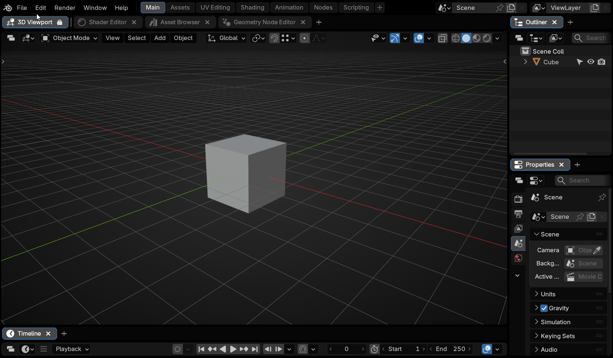
Highlights
- Any number of editors per area, each keeping its state.
- Drag tabs between areas and windows, or tear one off.
- Lock the tabs a layout depends on.
Ctrl+Tto add a tab by name.- Saved in the .blend.
- Follows your theme, or a palette you set.
Compatibility
Blender, Bforartists – version 5.1 – 5.2
Changelog
1.0.1
Fixed
- Enable Tab Bar for all Editors in all Workspaces now
works while Always show Tab Bar is on.
The button was greyed out whenever that preference was enabled. Disable stays unavailable in that case, since the preference puts every bar straight back. - Always show Tab Bar now reaches every
workspace.
It stopped after 24 tab bars across the file, so editors in workspaces you opened later went without one until you toggled the preference off and on again.
1.0.0
New
- Initial release of Tabs
Installation
There are several ways to install Tabs — use whichever fits you best.
Drag and drop from Superhive
The fastest route. On your Superhive orders page, drag the Tabs extension straight from the browser into the Blender window. The first time, Blender asks for your Superhive API token (found in your Superhive account settings) and adds Superhive as a remote extension repository.
Once connected, all your Superhive purchases appear under
Preferences > Get Extensions with one-click Install — and
you get update notifications inside Blender whenever a new version is
released.
See Superhive’s own guides: extension support announcement and connecting Superhive as a remote repository.
Install through Blender's extension system
With Superhive connected as a remote repository (see above), open
Edit > Preferences > Get Extensions, find Tabs in the
list, and press Install. Updates later are a single click
on Update.
Drag and drop the downloaded zip
Download the Tabs .zip from Superhive (do not extract it),
then drag the file from your file browser into the Blender window and
confirm the install prompt.
Install from Disk
- Download the Tabs
.zipfrom Superhive. Do not extract it. - In Blender, open
Edit > Preferences > Add-ons. - Click the dropdown arrow in the top-right corner and choose Install from Disk…
- Select the downloaded
.zipand confirm. - Make sure the checkbox next to Tabs is enabled.
All methods work in Bforartists too — Tabs detects the host application automatically.
Updating
Via the Superhive repository: press Update in
Get Extensions. Manually: install the new version over the old
one and restart. Your tabs, settings, and colours are preserved either way.
Uninstalling
Run Disable Tab Bar for all Editors in all Workspaces first, from Window > Tabs: a bar is a real editor area, so a .blend keeps its bars without it. Then disable or remove Tabs from the Add-ons list.
The Basics
Showing the tab bar
Every editor header has a Tabs button: click for a bar, click again to remove it. It lights up while the bar is showing, so the header always says which state the editor is in.
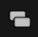
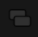
Adding tabs
Ctrl+T, which searches by name and works with no bar.- The + at the end of the bar.
- Right-click the bar, New Tab.
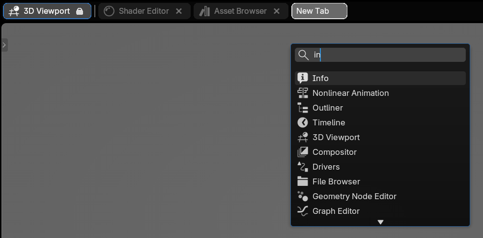
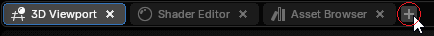
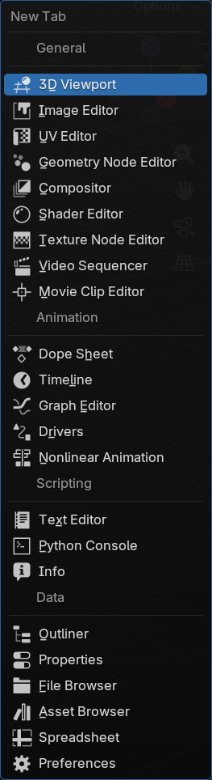
A placeholder shows where the tab will land; a bar-less editor gets one meanwhile.
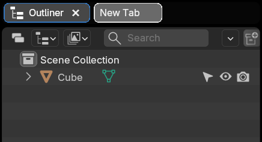
The menus
Right-click a tab for its own menu, or the bar for the whole-bar one.
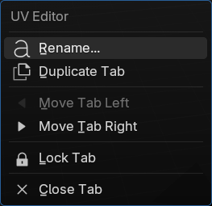
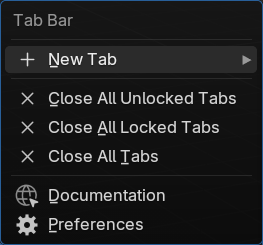
When the bar fills up
Tabs squeeze to fit, keeping their icon and close button. Past that the bar scrolls, and so does the mouse wheel over it.
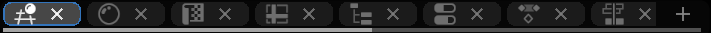
Moving Tabs
Where you drop a tab decides what happens:
- On a tab bar — it lands there, across areas and windows.
- On a bar-less header — that editor gains a bar with the tab in it.
- Anywhere else — it tears off into its own window.
While you are dragging
The tab carries a picture of where it is going; the editor it came from is blanked — red if it is going — with a mark on it:
- the icon of the tab that takes over;
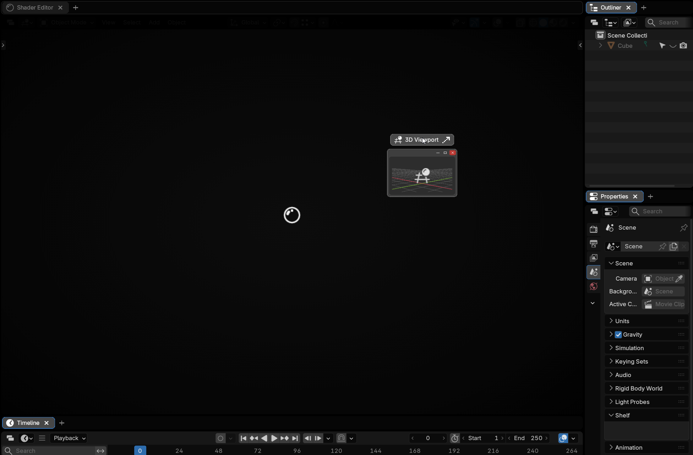
- an X when it is the last tab: that editor is going;
- an arrow beside it, showing which way a neighbour sweeps in. No arrow means several editors share the space.
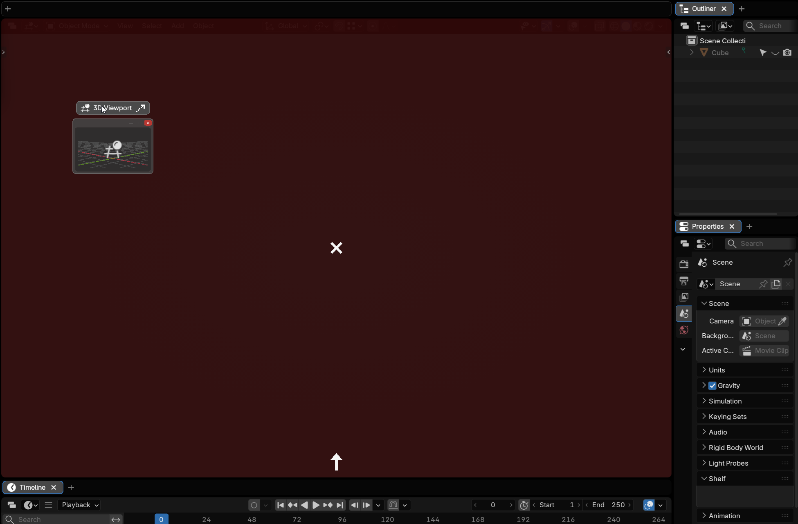
Splitting with a tab
Hold Shift and the editor under the cursor offers to split. The side nearest the cursor lights up, and the preview grows into the half the new editor would take — tab bar and all.
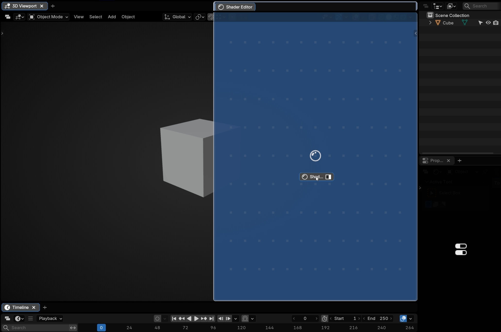
Hold Shift + Spacebar and the seam follows your cursor instead of sitting at the halfway mark, so you place the split where you want it before you let go.
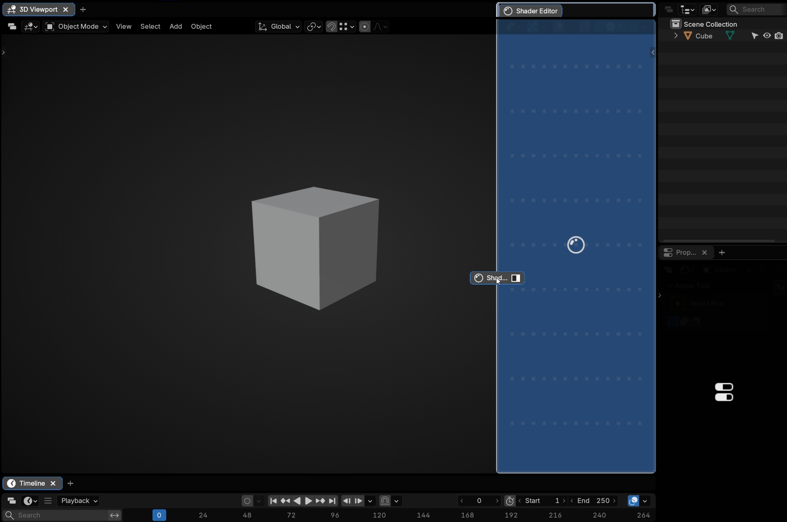
A preview that stays at its resting size and turns grey is a refusal: the editor has no room to be cut that way. The same Timeline takes a vertical split and refuses a horizontal one.
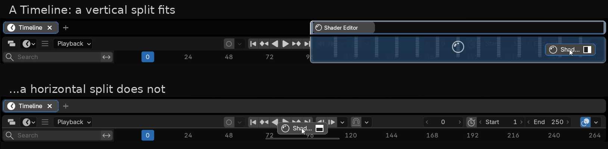
An editor Tabs made exists to hold that tab: drag it out and it folds away. Yours do too, unless Primary Areas Keep a Tab is on.
Leaving one tab behind takes the bar away; the Tabs button brings it back. Torn-off windows keep theirs unless Close Tab Bar in Window when one Tab remains is on.
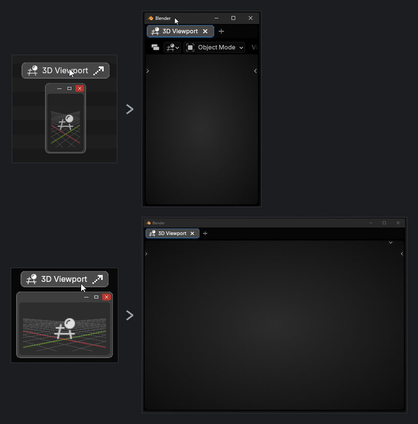
Closing the last tab
The × on a lone tab takes the tab, bar and editor together — not offered for a locked tab, with Primary Areas Keep a Tab on, or in the last editor of the last window.
All of it is animated, and honours Blender's Reduce Motion preference.
Area Edges
Right-click an edge for the Tabs edge menu instead of Blender's Area Options. It has Split, Join and Swap as Blender's does, but treats a bar and its editor as one thing, and adds Close Tab Bar / Add Tab Bar. Entries that cannot apply are greyed.
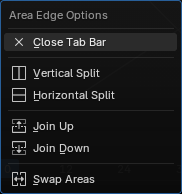
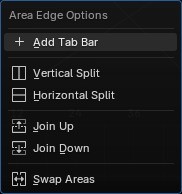
Locked Tabs
A locked tab cannot be closed, dragged or torn off. Locked tabs sit at the front behind a separator line; Move Tab Left/Right reorders one.
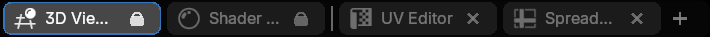
The tab an editor started with is its primary. Lock Primary Tab locks every one at once; unlocking one by hand is remembered.
Primary tab is a tab being locked. Primary area is an editor you made yourself, and is about folding away.
Saving & Loading
Tabs are always saved into the .blend; whether they return follows Blender's Load UI:
- On — the file's layout loads and its tabs with it.
- Off — your layout is kept; Load Tabs from .blend decides whether the file's tabs land on your areas where they line up.
An area that only existed in the saved file is skipped, and recreating that split by hand afterwards does not bring its tabs back. Bars come back the first time you switch to a workspace.
Settings
Edit > Preferences > Add-ons > Tabs. Every row has a restore button, lit when it is not at its default.
Shortcuts
New Tab, Show/Hide Tab Bar and the bar's right-click binding, all rebindable here. Show/Hide ships with no key — click the field and press one.
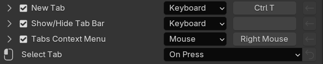
Tabs
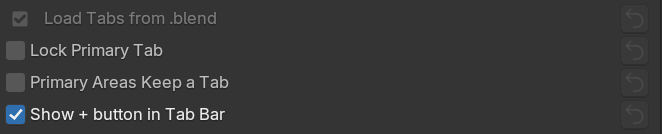
- Load Tabs from .blend — see Saving & Loading.
- Lock Primary Tab — see Locked Tabs.
- Show + button in Tab Bar — hidden, the tabs use that space.
- Select Tab — switch on Press (default) or Release.
Tab bars
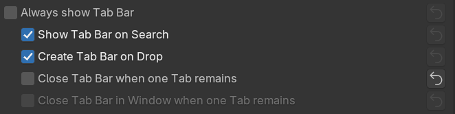
- Always show Tab Bar — a bar on every editor. It suspends the four rows under it.
- Show Tab Bar on Search, Create Tab Bar on Drop, Close Tab Bar when one Tab remains, and … in Window for windows other than the main one.
- Primary Areas Keep a Tab — on, your own editors hold their last tab.
The Tabs button
Whether it is shown, whether it is embossed, and which of four positions it takes in the header. All three grey out under Always show Tab Bar, which hides the button.
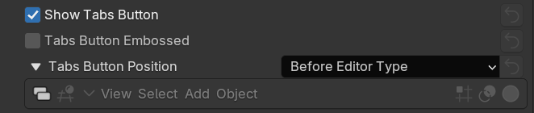
New Tab search
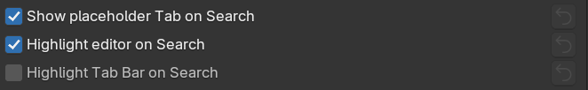
Three indicators for where a new tab will go, each switchable: the placeholder tab, a tint on the target editor, and a tint on its bar.
Appearance
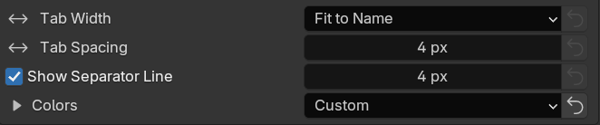
Tab Width fits each tab to its name or gives them all the same width. Tab Spacing is the gap between tabs, and Separator Line Spacing the gap either side of the line after the locked ones.
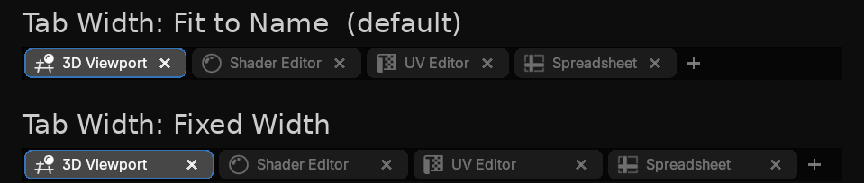
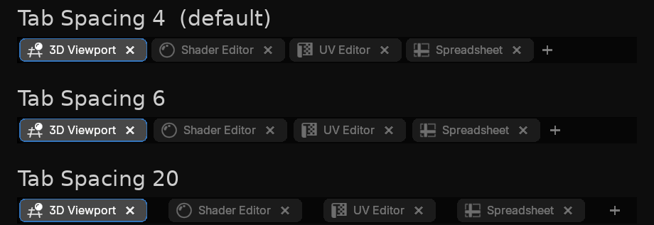
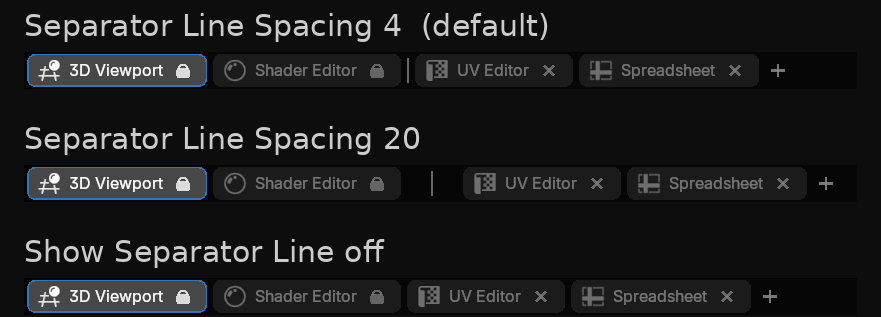
Colors
Follow Theme tracks your theme; Custom opens fourteen rows — the bar, tab outline, selected and unselected tabs and text, the separator, the + button, and six drag marks, where an Indicator is a mark and a Highlight the tint behind it. A split that cannot happen is always grey, whatever you set here.
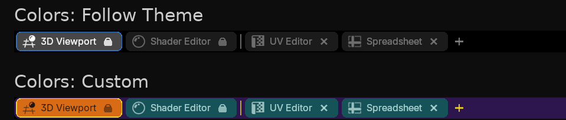
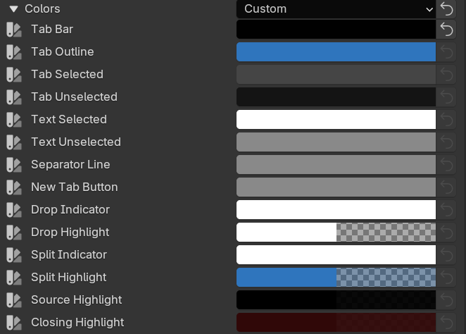
Bulk Actions
Give every editor a bar, take every bar away, or close all unlocked, locked or every tab. Primaries are kept. Also in Window > Tabs.
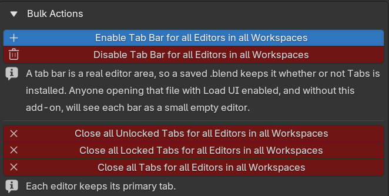
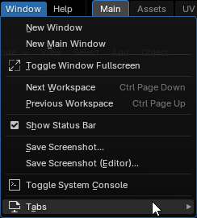
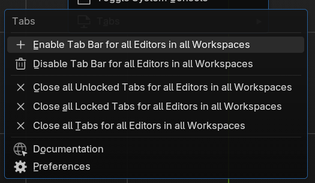
On Bforartists
Tabs works the same on Bforartists, with Bforartists’ own icon set, and the host is detected automatically — there is nothing to set.
One difference is visible. Bforartists draws the Editor Type dropdown before an add-on can reach the header, so the slot to the left of it does not exist and Before Editor Type is not offered. Tabs Button Position lists three places here rather than four: After Editor Type (the default), Right Group, First and Right Group, Last.
Each host keeps its own setting, so moving the button on one never moves it on the other.